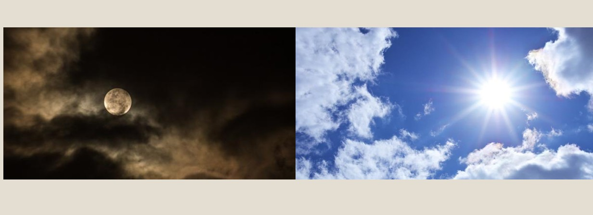
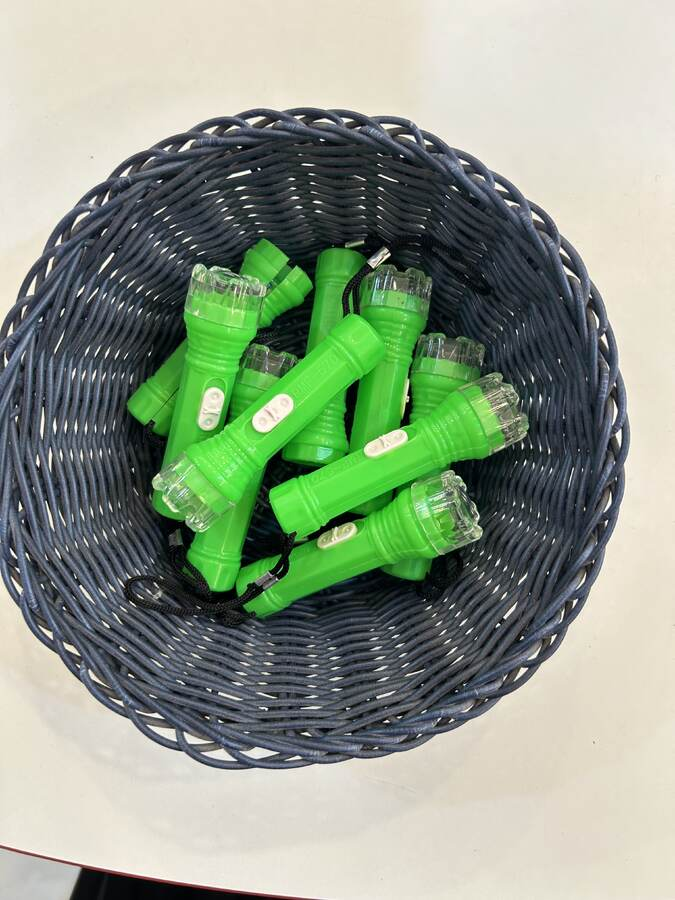
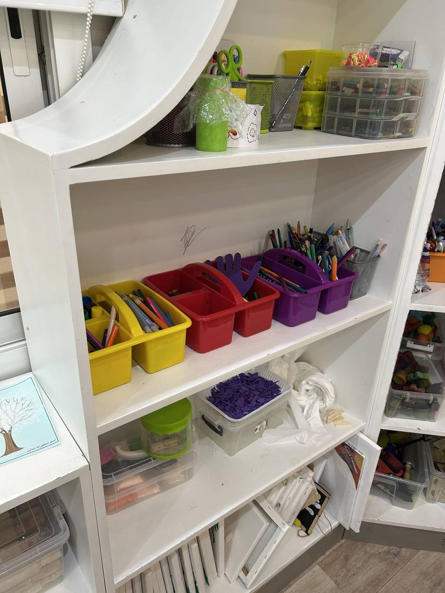

المرحلة: تمهيدي (5–6 سنوات) · الركن الداعم: ركن فنوني الجميلة
المدة: نصف ساعة
سؤال التركيز
كيف تدلُّنا الشمسُ — ضياؤها وجريانُها بأمر الله — على عظمة خالقها؟
بوصلةُ اللقاء: تفتح به المعلمةُ الحوار وتعود إليه عند الغلق. يقيسه سؤالُ التغذية الراجعة الأول ومؤشراتُ النجاح.
جوهر اللقاء
الشمس آية عظيمة من آيات الله، خلقها وسخّرها بحكمة فجعلها ضياءً يمدّ الأرض بالضوء والحرارة؛ تجري بأمره وتُطيعه، والتفكّر فيها عبادة قلبية تقودنا إلى تعظيم الخالق وشكره لا الانشغال بالمخلوق.
تظهر موسّعةً في «المعنى المركزي» بسير اللقاء؛ لو لم يبقَ من الدرس إلا جملةٌ فهي هذه.
ورقة التدريس السريعة — خطوات اللقاء أثناء الدرس
① تهيئة وبداية اللقاء ٨ د
إشارة بدء اللقاء: أنشودة «العلم هو النور الهادي».
تذكير الأطفال بقوانين الفصل الخمسة.
مراجعة سريعة، وتمهيد لمخلوق النهار العظيم.
② بناء وسير اللقاء ١٤ د
الشمس مخلوق الله سخّره لينير الأرض بالضوء والحرارة.
الشمس في القرآن: ﴿سِرَاجًا وَهَّاجًا﴾ + ﴿وَالشَّمْسُ تَجْرِي…﴾.
طاعة الشمس وسجودها نؤمن به كما ورد.
المعنى المركزي + تصحيح فهم الطفل.
③ إغلاق وتقويم ٨ د
النشاط المصاحب: تركيب بازل الشمس.
أسئلة التغذية الراجعة.
دعاء كفارة المجلس وختام اللقاء.
ربط الأسرة: عند شروق الشمس في اليوم التالي يُشير الطفل مع أسرته إليها ويقول: «الحمد لله الذي أذن للشمس أن تشرق — سبحان الله».
ورقةٌ مرجعية سريعة أثناء الدرس — الخطوات فقط دون الأهداف والزيادات؛ والنصّ الكامل في تبويب «دليل الدرس كامل».
مسار بداية اللقاء
① تهيئة
إشارة بدء اللقاء
السلام عليكم ورحمة الله وبركاته يا طلاب العلم المباركين. هيا نستمع لنعرف ماذا سيكون لقاؤنا.
الإشارة الثابتة: تُشغّل المعلمة أنشودة العلم هو النور الهادي علامةً ثابتةً لبدء لقاء علّمني ربي؛ فإذا سمعها الأطفال عرفوا أن اللقاء سيبدأ الآن، فيتهيّؤون للجلوس والإنصات والتفكّر.
الحزمُ مع الهدوء: تُدير المعلمةُ اللقاءَ بحزمٍ هادئ — صوتٌ لطيفٌ، وحدودٌ واضحة، وابتسامةٌ محتسبة — دون شدّةٍ تُنفّر ولا فوضى تُشتّت.
قوانين الفصل
أحافظ على نظافة فصليإماطة الأذى عن الطريق صدقة.
أستمع وأنصتفلا أقاطع الآخرين.
أحفظ لساني ويديالمسلم من سلم المسلمون من لسانه ويده.
أجلس جلسة صحيحةفي المساحة المخصصة لي.
أرفع يدي للمشاركةالسؤال للجميع والإجابة لمن تختاره المعلمة.
مراجعة سريعة
ماذا تعلّمنا في اللقاء السابق عن الليل والنهار؟ ما العبادة التي يحبها الله وتعلّمناها (التفكّر)؟ ثم تُمهّد المعلمة: «اليوم سنتعرّف على مخلوق عظيم من مخلوقات الله يظهر في النهار».
سير اللقاء
② بناء وسير
التمهيد للدرس: «اليوم سنتعرّف على مخلوق عظيم من مخلوقات الله، خلقه الله بحكمة وجعله سببًا في إنارة الأرض وإمدادها بالضوء والحرارة، ويظهر في النهار فقط — فهو آية من آيات الله».
ما هو هذا المخلوق؟تستمع المعلمة لإجابات الأطفال، ثم تعرض صورة للشمس.
صورة الشمس التي تعرضها المعلمة
الشمس مخلوق الله: «الله تعالى هو الذي خلق الشمس وسخّرها للإنسان بأمره، فجعلها تمدّ الأرض بالضوء والحرارة والدفء، وجعل ظهورها في النهار. فالشمس مخلوق يعمل بأمر الله ولا يخرج عن طاعته».
هل يكون اليوم كله نهارًا فقط؟لا، بل يكون نهارًا ثم يعقبه ليل ثم يعود النهار — فالعباد يحتاجون إلى الليل والنهار معًا.
منافع الشمس: «ينتفع الناس والمخلوقات بضوء الشمس في النهار — فتنتفع بها المزارع، وتنمو النباتات، ويستفيد الإنسان في أعماله. وكما يحتاجون النهار يحتاجون الليل للنوم والراحة لتسكن الأبدان».
الشمس في القرآن الكريم:
كم مرة ذُكرت الشمس في القرآن؟ذُكرت بلفظ «الشمس» ثلاثًا وثلاثين مرة، وبلفظ «سراجًا وهاجًا» مرتين.
ملحوظة شرعية للمعلمة: يُكتفى بإثبات السجود كما ورد، دون شرح الكيفية أو تصويرها أو ربطها بحركة حسية؛ لأن ذلك من الغيب — نؤمن به من غير تكييف ولا تمثيل ولا تشبيه.
أوقات الشروق والغروب:
في أي وقت تشرق الشمس؟ ومتى تغرب؟تشرق عند الفجر فيبدأ النهار، وتغرب عند المغرب فيبدأ الليل — بأمر الله وتقديره.
المعنى المركزي: الشمس آية عظيمة من آيات الله، خلقها وسخّرها بحكمة فجعلها ضياءً يمدّ الأرض بالضوء والحرارة؛ تجري بأمره وتُطيعه، والتفكّر فيها عبادة قلبية تقودنا إلى تعظيم الخالق وشكره لا الانشغال بالمخلوق.
تصحيح فهم الطفل: ما في الشمس من ضوء وحرارة نعمة من الله وحده؛ فنشكر الله لا الشمس، ولا نعبدها ولا نحبّها المحبة الكبرى — فالمحبة العظمى لله الذي خلقها وسخّرها. وسجودها غيبٌ نؤمن به كما جاء دون أن نتخيّل كيفيته.
الجملة الختامية: «جعل الله الشمس ضياءً وسخّرها لنا؛ الحمد لله الذي علّمنا ورزقنا التفكّر في هذا المخلوق العظيم» — يردّدها الأطفال.
الوسائل والصور المعروضة في اللقاء
الشمسمخلوق النهار بأمر الله
بطاقة قرآنية عدديةالشمس 33 · سراجًا وهاجًا 2

الشمس والقمرآيتان من آيات الله
الإغلاق — التغذية الراجعة
③ إغلاق
أسئلة التغذية الراجعة (مع الإجابات النموذجية)
من خلق الشمس وسخّرها لنا؟الله وحده هو الذي خلق الشمس وسخّرها لتنير الأرض بأمره، فنحمده ونقول: سبحان الله.
بماذا تنفعنا الشمس في النهار؟تمدّ الأرض بالضوء والحرارة، فتنمو بها النباتات وتنتفع بها المزارع ويعمل بها الناس — وكل ذلك نعمة من الله.
كيف نشكر الله على نعمة الشمس؟نقول: «الحمد لله الذي جعل الشمس سراجًا وهاجًا»، ونتفكّر في خلقها لنعظّم الله ونطيعه.
تختار المعلمة سؤالين أو ثلاثة بحسب وقت الأطفال، وتُرشد الطفل إلى الإجابة برفق. المعيار: ٣ إجابات صحيحة على الأقل.
النشاط المصاحب
تركيب بازل الشمس
الهدفأن يثبّت الطفل الصورة الذهنية للشمس مخلوقًا من مخلوقات الله، وينمّي التناسق الحركي مع انتظار الدور.
الأدواتبازل صورة الشمس (قطع كبيرة) · بطاقة «سراجًا وهاجًا» · بطاقة الرقم (2).
خطوات التنفيذ
توزّع المعلمة قطع بازل الشمس بدورٍ منظّم.
يركّب الطفل القطع حتى تكتمل صورة الشمس، ثم يسمّيها: «الله خلق الشمس».
تختم المعلمة: «سبحان الله الذي جعل الشمس سراجًا وهاجًا».
أسئلة أثناء النشاط
من الذي خلق الشمس وجعلها تشرق كل يوم؟
ماذا وصف الله الشمس في القرآن؟
كم مرة وردت «سراجًا وهاجًا»؟
اختيارات حسب حاجة الطفل
من يحتاج دعمًا: سؤال بسيط «من خلق الشمس؟» مع الإشارة للصورة.
المتقن للبازل: يساعد زميله أو يقرأ كلمة «الشمس» من البطاقة.
الخجول: «جزاك الله خيرًا» عند أول إجابة.
دعاء ختام النشاطالحمد لله الذي خلق الشمس وسخّرها لنا، وجعلها آيةً تدلّ على قدرته، ورزقنا التفكّر في خلقه.
اختيارات الأنشطة الإضافية
تلبية الاحتياجات الفرديةمن يحتاج دعمًا: سؤال بسيط «من خلق الشمس؟» مع الإشارة للصورة. السريع: يذكر فائدة من فوائد الشمس أو يقول «سراجًا وهاجًا». الخجول: «جزاك الله خيرًا» عند أول إجابة.
الربط بالمواد الأخرىكتابي المنير: استخراج لفظ «الشمس» من سورة الشمس و«سراجًا وهاجًا» من النبأ. مهاراتي: عدّ مرات ذكر «سراجًا وهاجًا» (الرقم 2). أدب واقتداء: ذكر الصباح «أصبحنا وأصبح الملك لله…».
التوسيع والإثراءبيتي: ملاحظة شروق الشمس مع الأسرة والقول: «الحمد لله الذي أذن للشمس أن تشرق». فني: تلوين الشمس (بلا ملامح) وكتابة: الله خلق الشمس.
اقتراحات للتكرار إعادة بطاقة «سراجًا وهاجًا» للمراجعة السريعة، وقراءة ﴿وَالشَّمْسُ تَجْرِي…﴾ في مطلع كل حصة.
كفارة المجلس · خاتمة اللقاء
سبحانك اللهم وبحمدك، أشهد أن لا إله إلا أنت، أستغفرك وأتوب إليك.
العلاقة التكاملية لهذا اللقاء
الفكرة الناظمة لليوم: الشمس آية مسخّرة تدل على قدرة الله ونظامه.
سؤال اليوم: كيف تجعلني الشمس أعرف قدرة الله وأشكره على الضوء والدفء؟
هذا اللقاء: علّمني ربي — الشمس.
كيف يتكامل هذا اللقاء مع بقية دروس اليوم والوحدة؟
التعليمُ التكامليّ = يعيشُ الطفلُ المعنى الواحد في كلّ حصص يومه؛ فدرسُ «الشمس آيةٌ مسخّرة» يمتدُّ خيطًا في القرآن واللغة والعدد والأدب. وهذه جسورُ الربط العمليّة:
كتابي المنير — سورة الفجر
﴿وَالْفَجْرِ﴾ هو بزوغُ ضوء الشمس الذي درسه الطفلُ في علّمني؛ فيربط نعمةَ الضوء بقسَم الله في كتابه. حركةُ المعلمة: «الفجرُ بدايةُ ضوء الشمس التي تعلّمناها — أقسم اللهُ به لعظمته».
أحبك ربي — أسماء الله الحسنى
مَن سخّر هذه الشمسَ العظيمة وجعلها نافعة؟ اللهُ القديرُ الرزّاق؛ فآيةُ الشمس تقودُ إلى تعظيم أسمائه. حركةُ المعلمة: «الشمسُ لا تنفع نفسها… الذي سخّرها لنا هو ربُّنا».
لساني عربي
كلماتُ اليوم «شَمْس · ضَوْء · دِفْء · نَهار» يقرؤها الطفلُ بالحركات؛ فاللغةُ أداةٌ للتعبير عن نعم الله. حركةُ المعلمة: «مَن يقرأ كلمةَ (ضوء)؟».
شكرُ نعمة الضوء بالأذكار، مع أدبِ السلامة: لا ننظر إلى الشمس مباشرة. حركةُ المعلمة: «نشكرُ الله على الضوء، ونحفظ أعيننا فلا ننظر إليها».
الأركان والأناشيد
في ركن «أكتشف ما حولي» يلاحظ الطفلُ ظلَّ الشمس بأمان (بضوء الشمس لا مصباح)، ويردّد نشيدَ التفكّر. حركةُ المعلمة: ربطُ نشاط الركن بعبارة «سبحان مَن سخّر الشمس».
فكرة للربط السريع
اسألي: كيف يخدم هذا اللقاء معنى اليوم؟ وما السلوك أو العبارة التي سيخرج بها الطفل إلى اللقاء التالي (شكر الله على نعمة الضوء والحرارة)؟
التقويم في منهج غرس القيم ثلاثي المراحل — يرصد الطفل قبل الدرس وأثناءه وبعده.
التقويم القبلي
ما اسم الوحدة التي تعلمناها بالأمس؟
ماذا تعلّمنا عن الليل والنهار؟
ما العبادة التي يحبها الله وتعلّمناها؟
التقويم التكويني
ما المخلوق الذي يظهر في النهار؟
هل يستمر النهار وحده أم يعقبه ليل؟
لماذا يحتاج الناس إلى الليل؟
ملاحظة فهمهم لطاعة الشمس لأمر الله
التقويم النهائي (البازل + أسئلة)
ما اسم المخلوق الذي تعلمنا عنه اليوم؟
متى تشرق الشمس؟ ومتى تغرب؟
ماذا نستفيد من الشمس في حياتنا؟
المعيار: 3 إجابات صحيحة على الأقل
مؤشرات النجاح
المؤشر الوجداني
تعبير تلقائي بـ«سبحان الله» عند مشهد الشروق، أو ظهور مشاعر إعجاب وتعظيم.
المؤشر المعرفي
تسمية الشمس مخلوقًا من مخلوقات الله وذكر بعض أوصافها القرآنية.
المؤشر السلوكي
الانتظار الهادئ أثناء تركيب البازل، والمشاركة في الأسئلة باحترام.
المؤشر الفني
تركيب البازل بشكل صحيح، وتلوين الشمس بدون ملامح بشرية.
الآداب الصفية لحظات تربوية ذهبية — تبدأ المعلمة كل فكرة بآية أو نص حديث، ولا يعلو صوتها على النص الشرعي. الحزم مع الهدوء دائمًا.
آداب المعلمة — مقدمة الرعاية
تبدأ بالبسملة والحمدلة والدعاء: «اللهم علّمنا ما ينفعنا وانفعنا بما علّمتنا».
تنطلق كل فكرة بآية أو نص حديث شريف.
الحزم مع الهدوء — فلا يعلو صوت المعلمة على النص الشرعي.
آداب الطفل
الجلوس في المساحة المخصصة له.
الاستماع وعدم المقاطعة.
المشاركة بلطف والاستئذان.
١ · تحويل التعجّب من الشمس إلى تعظيم الله
الموقفقال طفل بتعجّب: «الشمس كبيرة جدًا! هي أكبر من الأرض؟!»
الرد المقترح«ما شاء الله! نعم، الشمس أكبر بكثير — والله الذي خلقها أعظم منها بلا نهاية. سبحان الله الذي خلق الشمس وسخّرها لنا!»
القيمةتحويل الإعجاب بالمخلوق إلى تعظيم الخالق — عظمة المخلوق تدل على عظمة خالقه.
الموقفسألت طفلة: «لماذا تغرب الشمس كل يوم؟ لماذا لا تبقى معنا؟»
الرد المقترح«ما أجمل سؤالك! أنتِ من أولي الألباب التي تتفكّر! الله هو الذي يأذن لها أن تغرب — لأن العباد يحتاجون الليل للراحة. الله يعلم ما يُصلحنا».
القيمةتشجيع التفكّر عبادةً — ربط كل ظاهرة بحكمة الله ورحمته — التسليم لحكمته.
ربط بالدرس: «اليوم تفكّرنا في الشمس — وهذا السؤال هو بالضبط ما يُسمّيه الله تفكّرًا».
٣ · الرضا بالرزق وتوزيع الفرص
الموقفطفل يريد أن يضع القطعة الأخيرة في البازل قبل دور زميله.
الرد المقترح«الشمس لا تتقدّم عن وقتها ولا تتأخر — وأنت كذلك: انتظر دورك، جزاك الله خيرًا».
القيمةضبط النفس والصبر — ربط سلوك الانتظار بسنّة الكون.
ربط بالدرس: ﴿وَالشَّمْسُ تَجْرِي لِمُسْتَقَرٍّ لَّهَا﴾ — كل شيء له وقته المحدّد بتقدير الله.
٤ · ربط النعمة بالمنعم لا بالمخلوق
الموقفقالت طفلة: «أنا أحب الشمس كثيرًا!»
الرد المقترح«نحن نُقدّر نعمة الشمس ونشكر الله عليها — أما المحبة الكبيرة فهي لله وحده الذي خلقها وسخّرها لنا. قولي: الحمد لله الذي أنعم علينا بالشمس».
القيمةتوجيه المشاعر توجيهًا صحيحًا — الحب الأكبر لله — الشكر يُردّ إلى المنعم.
ربط بالدرس: ما في الشمس من ضوء وحرارة نعمة من الله وحده — فنشكر الله لا الشمس.
٥ · الهدوء والسكينة في مجلس العلم
الموقفضجيج من بعض الأطفال أثناء عرض الصور.
الرد المقترح«هذا مجلس علم تحفّه الملائكة — نتأدب فيه بالهدوء والسكينة. والسكينة نعمة نزلت علينا مثل السكينة في الليل».
القيمةتعظيم مجلس العلم — ربط الهدوء بالسكينة التي ينزلها الله على أهل العلم.
ربط بالحديث: «ما اجتمع قوم في بيت من بيوت الله… إلا نزلت عليهم السكينة».
القيمة تترسّخ حين تُعاش في البيت كما تُتعلَّم في الفصل — هذه التهيئات يُطبّقها ولي الأمر قبل الدرس وبعده.
١ · تهيئة وجدانية
أعند رؤية شروق الشمس صباحًا يقول ولي الأمر لطفله: «الحمد لله الذي أذن للشمس أن تشرق».
بيلفت نظره إلى النعمة بلطف: «انظر إلى الضوء… هذا من رحمة الله بنا»، ويربطه بذكر الصباح.
← بذلك ينشأ في قلب الطفل تعظيم المنعم عند رؤية النعمة.
٢ · تهيئة معرفية
أيفتح مع طفله المصحف على ﴿وَالشَّمْسُ تَجْرِي لِمُسْتَقَرٍّ لَّهَا﴾ ويقرأها بهدوء.
بيسأله بلطف: «من الذي جعل الشمس تجري؟ هل تخرج الشمس عن وقتها؟»
← يرسّخ مرجعية القرآن قبل سماع الدرس في الصف.
٣ · تهيئة حسية
أعند الخروج صباحًا يشير ولي الأمر إلى الشمس ويقول: «الله هو الذي خلقها وسخّرها».
بملاحظة ضوئها على الجدران أو الأرض وربطه بنفعها — دون النظر المباشر إليها.
← هنا يعيش الطفل معنى التسخير والانتظام في واقعه اليومي.
٤ · تهيئة قرآنية عددية بسيطة
أيذكر ولي الأمر لطفله أن الله ذكر الشمس في القرآن مرات كثيرة، وأن لفظ «سراجًا وهاجًا» ورد مرتين.
بيمكن قراءة سورة الشمس معه قراءة مختصرة.
← بذلك يدخل الطفل الصف وهو يحمل معلومة قرآنية مسبقة.
٥ · تهيئة عملية خفيفة
أيرسم الطفل دائرة بسيطة تمثّل الشمس ويكتب بمساعدة ولي أمره: «الله خلق الشمس» (بلا ملامح).
بأو يساعده في كتابة بطاقة صغيرة بكلمة «الشمس» ليعرضها في الصف.
← مشاركة الأسرة تعزّز ثقة الطفل واستعداده للعرض أمام زملائه.
٦ · تهيئة سلوكية
أيذكّر ولي الأمر طفله أن ضوء الشمس نعمة تُستعمل في الخير: «نستفيد من ضوء الشمس في التعلم والعمل».
بيربط بين شروق الشمس وبداية يوم نافع.
← يصبح السلوك اليومي امتدادًا للدرس.
٧ · تهيئة قصصية قصيرة
يروي ولي الأمر قصة قصيرة عن طفل يرى الشمس صباحًا فيقول: «سبحان الله الذي خلق الشمس»، ويُختم بسؤال: «من الذي أذن لها أن تشرق اليوم؟»
← القصة تغرس التعظيم والتفكّر دون مبالغة أو خيال غير منضبط.
أسئلة تطرحها على طفلك
ماذا تعلّمتَ اليوم في المركز؟ عن أي مخلوق تحدّثنا؟
من الذي خلق الشمس وجعلها تشرق كل يوم؟
بماذا وصف الله الشمس في القرآن؟ (سراجًا وهاجًا)
ماذا نقول عندما نرى الشمس ونتفكّر فيها؟
كم مرة وردت كلمة «سراجًا وهاجًا» في القرآن؟
نص رسالة جاهزة لولي الأمر (واتساب)
بسم الله الرحمن الرحيم السلام عليكم ورحمة الله وبركاته
تعلّم طفلكم الكريم اليوم عن الشمس في مادة علّمني ربي. تعرّف على أن الله خلق الشمس وسخّرها لنا، وأنها تجري بأمره وتطيعه، وأن الله وصفها في القرآن بـ«سراجًا وهاجًا» (أي مضيئة متوهجة).
نشاط بيتي: غدًا عند الشروق، أشيروا مع طفلكم إلى الشمس وقولوا: «الحمد لله الذي أذن للشمس أن تشرق — سبحان الله!»
جزاكم الله خيرًا على شراككم في تربية أبنائكم — فريق نادي غرس القيم
القيم الأساسية للدرس
العلم
العلم ينير الطريق إلى الجنة — التعلم عن الشمس يقود إلى معرفة الله وتعظيمه.
التفكّر
عبادة قلبية تُقوّي الإيمان — التفكّر في الشمس يقود إلى تعظيم الخالق لا المخلوق.
التعظيم
تعظيم الله وإجلاله عند رؤية آيات قدرته في الكون والتفكّر فيها.
الشكر
شكر الله على نعمة الضوء والحرارة — النعمة تُردّ إلى المنعم لا إلى المخلوق.
التسليم
الاطمئنان لحكمة الله والرضا بأمره مع السعي لطاعته كما تُطيعه الشمس.
الإيمان بالغيب
سجود الشمس تحت العرش نؤمن به من غير تكييف ولا تمثيل ولا خوض في الكيفية.
كيف تغرس المعلمة القيم أثناء الدرس؟
رؤية صورة الشمس أو مشهد شروقها تفتح باب التعظيم لله: «هذا مخلوق من مخلوقات الله».
ما في الشمس من ضوء وحرارة نعمة من الله وحده — يُقابَل بالحمد.
انتظام شروق الشمس وغروبها يرسّخ أن كل شيء يجري بأمر الله وتقديره.
تقول المعلمة بهدوء: «سبحان الله الذي خلق الشمس وسخّرها» — ويقولها كل طفل بلسانه.
المفاهيم الأساسية
الشمس آية من آيات الله
خلقها الله وسخّرها بحكمة — جريانها وانتظامها دليل على قدرة الخالق لا استقلالٌ منها.
الشمس مسخّرة مفتقرة إلى الله
النفع والضر بيد الله وحده لا بيد المخلوق — التسخير دليل الملك التام.
طاعة الشمس وسجودها
تسجد تحت العرش — نؤمن بهذا كما جاء في النص دون تكييف أو تمثيل.
انتظام الشمس دليل إحكام التقدير
﴿ذَٰلِكَ تَقْدِيرُ الْعَزِيزِ الْعَلِيمِ﴾ — يرسّخ الطمأنينة إلى حكمة الله.
الانتفاع بالشمس نعمة تستوجب الشكر
﴿وَجَعَلْنَا سِرَاجًا وَهَّاجًا﴾ — الضوء والحرارة نعمة تُقابَل بالحمد.
التفكّر في الشمس عبادة قلبية
﴿وَيَتَفَكَّرُونَ فِي خَلْقِ السَّمَاوَاتِ وَالْأَرْضِ﴾ — يقود إلى تعظيم الله لا الانشغال بالمخلوق.
العلم النافع يقوّي الإيمان
﴿سَنُرِيهِمْ آيَاتِنَا فِي الْآفَاقِ﴾ — العلم وسيلة للهداية لا غاية مستقلة.
الأركان مساحاتٌ غنيّة بأدوات التعلّم، مدّتها ٣٠ دقيقة، يلعب فيها الأطفال ويستكشفون الأدوات بحرّية ومرح — لا التزام بآداب مجالس العلم كالمواد الأساسية. وتستقطع المعلمة وقتًا يسيرًا لتنفيذ نشاط تطبيقي سريع على الفكرة المركزية للدرس تأكيدًا وترسيخًا للمعلومة. أمام المعلمة ركنان مقترحان تختار بينهما (أو تنفّذهما معًا) بحسب جاهزية البيئة.
ضابط منهجي: الصور والوسائل لتقريب الفكرة للمعلمة، أما النص الشرعي فيبقى في موضع التلاوة والتعظيم، وأسماء الله تُشرح بمعانٍ صحيحة مناسبة للطفل بلا تشبيه ولا تمثيل، ولا تُمثَّل صور الغيب ولا سجود الشمس.
ضوءُ الشمس الداخلُ من النافذة (أو في الفناء)، جسمٌ صغيرٌ غير قابل للكسر، ورقةٌ بيضاء، وبطاقات: ضوء · ظل · لا ننظر إلى الشمس.
قوانين الركن
البقاء في مساحة الركن · المحافظة على الأدوات · انتظار الدور · إعادة كل وسيلة إلى مكانها.
اللعب الحرّ في الركن
يستكشف الأطفال الأدوات ويلاحظون الضوء والظل بحرّية ومرح، دون تكليف؛ فالركن مساحة لعب لا حلقة علم.
النشاط التطبيقي السريع
تستقطع المعلمة نحو ٥–٧ دقائق لتطبيق على الفكرة المركزية: الشمس آية من آيات الله، ونلاحظ أثر الضوء والظل مع الالتزام بالسلامة.
تقرأ المعلمة قوانين الركن وتعرض بطاقة السلامة.
تضع الجسمَ الصغير في ضوء الشمس على الورقة، فيتكوّن الظلُّ خلفه فيلاحظه الطفل ويشير إليه.
تحرّك الجسمَ قليلًا (أو يلاحظون الظلَّ في وقتٍ آخر من النهار) فيلاحظ الطفل تغيّر مكان الظل.
يردّد الطفل: الضوء يظهر الظل، ونحافظ على أعيننا.
هدف الركن
أن يلاحظ الطفل تكوّن الظل من جسم يحجب الضوء.
دور المعلمة
تُنبّه المعلمة الأطفالَ إلى عدم النظر إلى الشمس مباشرة، وتربط بعد الملاحظة بقول: جعل الله الشمس نافعة لنا.
خصوصية عقدية وتربوية
لا ينظر الطفل إلى الشمس مباشرة، ولا تُستخدم التجربة لتمثيل الشمس ذاتها بل أثر الضوء فقط.
مناسب للفئة العمرية
خطوات قصيرة محسوسة، مع طفل أو طفلين في كل دورة حتى لا يزدحم الركن.
المخرج
يميّز الطفل بين الضوء والظل ويذكر قاعدة سلامة واحدة.
نموذج تطبيقي للركن

ظل الشمس الآمننلاحظ الظلَّ الذي يصنعه ضوءُ الشمس بأمان
الجملة الختامية للركن: الله جعل الشمس نافعة، وأنا أحافظ على عيني.
شمس النعم
ركن فنوني الجميلة
الأدوات والوسائل التعليمية
دائرة صفراء جاهزة، شرائط ورق للأشعة، صور صغيرة: ضوء · دفء · نمو نبات · تجفيف ملابس، وغراء آمن. (أدوات آمنة من ركن فنوني الجميلة لقصّ ولصق بسيط.)
قوانين الركن
البقاء في مساحة الركن · المحافظة على الأدوات · انتظار الدور · إعادة كل وسيلة إلى مكانها.
اللعب الحرّ في الركن
يستكشف الأطفال الخامات ويجرّبون اللصق والتشكيل بحرّية ومرح قبل النشاط الموجّه.
النشاط التطبيقي السريع
تستقطع المعلمة دقائق يسيرة لتطبيق على الفكرة المركزية: من آثار الشمس التي جعلها الله: الضوء والدفء والنفع اليومي.
تقرأ المعلمة قوانين الركن وتوزّع الخامات المحدودة.
يلصق الطفل دائرة الشمس في وسط الورقة.
يلصق ثلاث صور فقط حولها: ضوء · دفء · نبات، ويسمّي فائدة واحدة للشمس.
ينظّف مكانه ويعيد أدوات اللصق.
هدف الركن
أن ينتج الطفل بطاقة بصرية تلخّص فوائد الشمس المحسوسة.
دور المعلمة
تركّز على منتج بسيط لا على جمال الزخرفة، وتمنع الإسراف في الخامات.
خصوصية عقدية وتربوية
لا يبالغ في عبارات علمية أو عقدية، ويُقال: هذه من منافع الشمس التي خلقها الله.
مناسب للفئة العمرية
خطوات قصيرة محسوسة، مع اختيار طفل أو طفلين في كل دورة.
المخرج
يعبّر الطفل بصريًا عن فائدة واحدة أو أكثر للشمس.
نموذج تطبيقي للركن

شمس النعمقصّ ولصق بسيط لفوائد الشمس
الجملة الختامية للركن: الشمس من خلق الله، وفيها منافع لنا.
تنبيه تنظيمي: إذا لم تكن وسيلة الركن متاحة، تختار المعلمة الركن الأقرب معنى ولا تنفّذ النشاط بوسيلة لا تخدم الدرس. المهم أن يخرج الطفل بسلوك عملي واحد مرتبط بالدرس.
وحدة الليل والنهار · علّمني ربي · اللقاء الثاني — الشمس · نادي غرس القيم لضيافة الأطفال